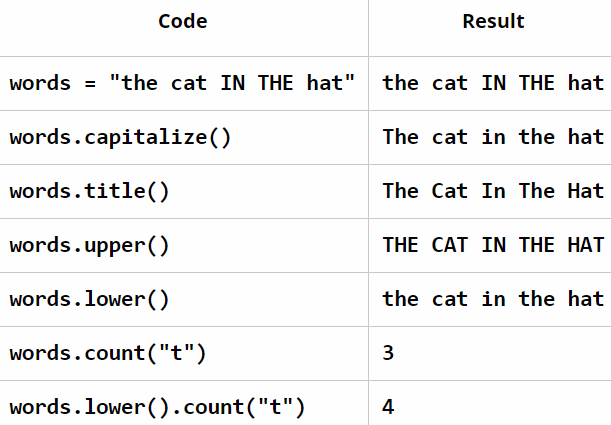

One of the things you learned in the previous lesson was how to store data in a variable. A variable is like a name that we attach to that data, so that later we can refer to it when we need it. We will need to keep track of more and more variables and because of this we need to use good variable names. You want use use descriptive language that is harder to forget like "favorite_color" for example.
Comments are a way for you to include notes in your code. They don't affect the program in any way, but they make it easier for someone to understand the code when it is viewed later in time.
Videos of comments below:
"Strings" are variables that are a sequence of characters (for example, letters, numbers, spaces, symbols, etc.). If you will look at the videos below, they demonstrate how to combine, format, and display strings in different ways:
As the videos show, some helpful string functions are available in Python are:
Note that "words.count("t")" resulted in a 3, because it did not count the capital "T" in the sentence. On the other hand, "words.lower().count("t")" resulted in a 4, because it first converted everything to lowercase, and then counted them, so when it counted the t's, the capital T in that sentence was first converted to a lowercase t, and then it was counted.